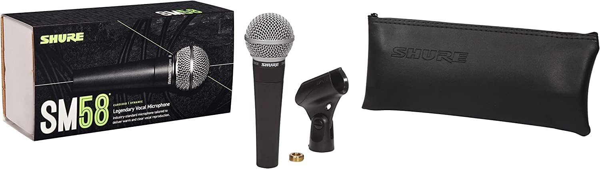
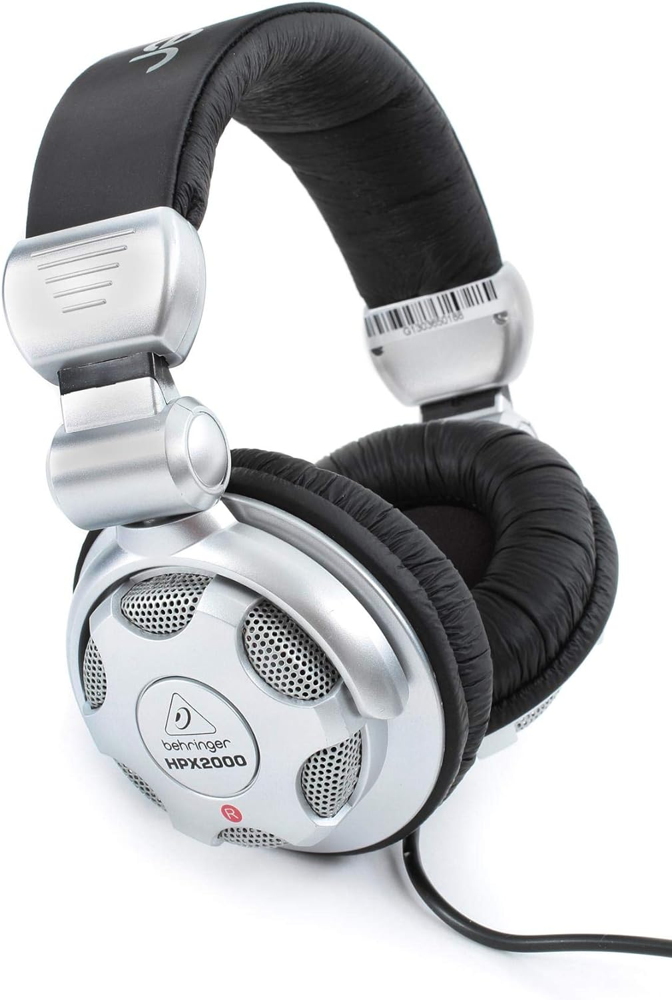

Micrófono SHURE (SM58-LC)
 Ver másBehringer HPX2000 Auriculares

- Bajo de alta definición y agudos supertransparentes
- Rango dinámico ultra alto
- Cápsula de cobalto de alta eficiencia
- Conector de 1/8" más adaptador de 1/4" incluido
- Cable de un solo lado con cables de cobre sin oxígeno Ver más